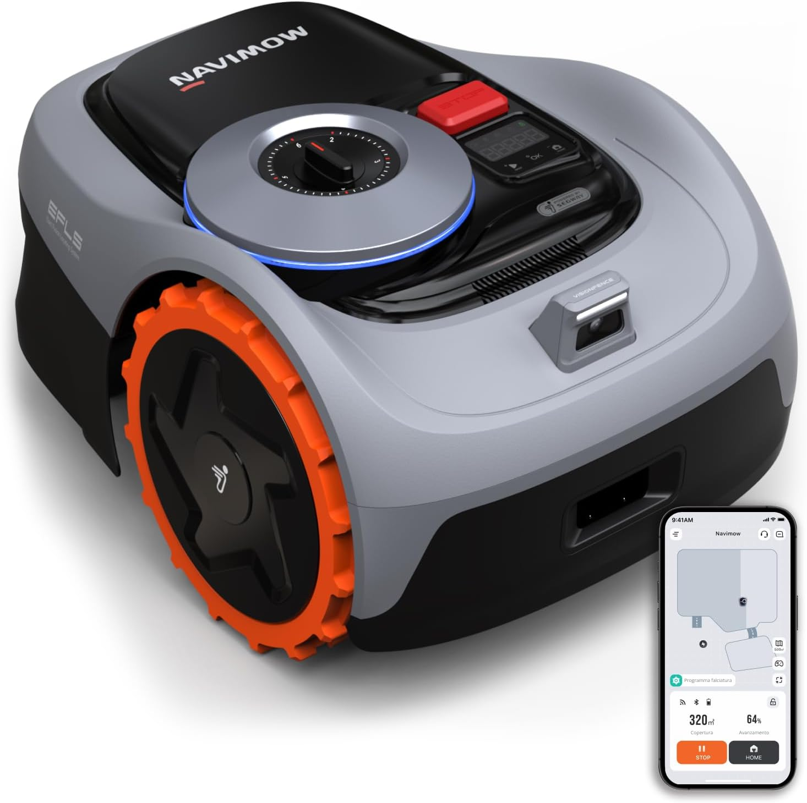
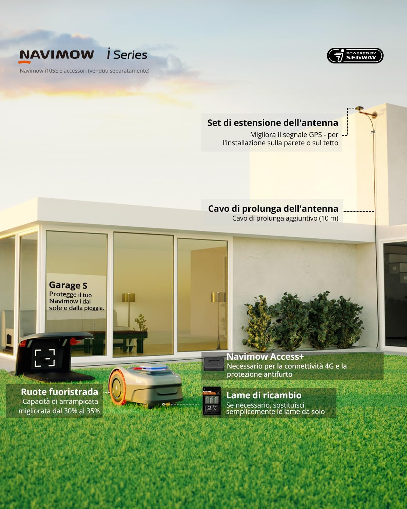

Installare e usare il Segway Navimow i105E nella vita reale: cosa aspettarsi davvero

Il Segway Navimow i105E promette un’installazione più semplice rispetto ai robot con filo, ma nella vita reale ci sono dettagli che fanno la differenza tra un’esperienza fluida e una frustrante.
Quando si parla del Segway Navimow i105E, uno dei messaggi più forti è la semplicità di installazione.
In parte è vero: rispetto a un robot con filo perimetrale, la fase iniziale è meno invasiva e meno faticosa. Ma “più semplice” non significa “istantaneo”.
La differenza tra facile da configurare e immediato
Con questo modello, il lavoro si sposta. Si fa meno fatica a livello fisico, ma serve più attenzione nel capire dove posizionare antenna, stazione e aree di lavoro.
Non c’è più un bordo fisico da definire con il cavo, però bisogna leggere il giardino come un sistema.
Il Navimow i105E non ti chiede di scavare lungo il prato, ma ti chiede di progettare bene la configurazione iniziale.
Cosa comprende davvero il sistema
Il sistema non è formato solo dal robot. Ci sono il robot rasaerba, la stazione di ricarica, l’antenna GNSS e l’app, che insieme costruiscono il funzionamento dell’intero ecosistema.
Questo ha una conseguenza molto concreta: se uno di questi elementi viene posizionato male, tutta l’esperienza peggiora.

Prima di iniziare: il prato va preparato
Prima ancora di pensare all’app, conviene osservare il prato con occhi diversi.
Un robot autonomo lavora bene quando il terreno è pulito, leggibile e privo di oggetti inutili lasciati in giro.
In pratica, bisogna togliere bastoni, pietre, giocattoli, piccoli ostacoli mobili e tutto ciò che potrebbe interferire con un passaggio regolare.
Anche la gestione dell’irrigazione conta. Un robot del genere dà il meglio su erba asciutta, non durante o subito dopo un’annaffiatura.
Posizionare antenna e stazione: qui si decide metà del risultato
L’antenna non è un dettaglio secondario. Nei robot senza filo è uno dei componenti che influenzano di più la qualità del funzionamento.
Se viene collocata in una zona poco favorevole, tutta la precisione promessa dal sistema si riduce.
Anche la base di ricarica non va semplicemente “appoggiata”. Deve trovarsi in un punto comodo per il robot, coerente con la forma del prato e con i percorsi di rientro.
La mappatura è il vero passaggio chiave
Una volta installati i componenti, arriva il momento in cui il prato diventa digitale: la mappatura.
Qui il Segway Navimow i105E smette di essere un semplice robot rasaerba e diventa uno strumento che interpreta il tuo giardino.
Dall’app si definiscono aree di lavoro, zone vietate e corridoi di passaggio. Questa parte va fatta con calma, perché una buona mappa iniziale evita settimane di correzioni.

Cosa conviene fare durante la configurazione
Conviene definire bordi puliti e coerenti, segnare con precisione le zone vietate e pensare ai passaggi tra aree come corridoi chiari, non improvvisati.
Una mappatura frettolosa dà spesso un risultato “quasi giusto”, che è la situazione più fastidiosa: non abbastanza sbagliata da rifare tutto, ma nemmeno abbastanza precisa da lasciarti tranquillo.
La gestione multi-zona nella pratica
Una delle funzioni più utili del i105E è la gestione multi-zona.
Nella realtà serve soprattutto quando il prato non è un unico rettangolo semplice, ma è diviso tra area anteriore e posteriore, porzioni laterali strette o zone separate da vialetti.
Il valore vero non sta nel numero di zone, ma nel fatto che il robot può passare da una gestione semplice a una più articolata senza perdere ordine.
Come cambia la manutenzione del prato ogni giorno
Con il Navimow i105E cambia il ritmo della cura del prato. Non è una macchina da accendere quando l’erba è ormai troppo alta.
È uno strumento che lavora bene sulla continuità: piccoli interventi frequenti, invece di un taglio pesante e saltuario.
Questo cambia anche il modo di percepire il prato. Non viene più “recuperato” ogni tanto, ma mantenuto in equilibrio.
Rumore e convivenza con la casa
Uno degli aspetti più apprezzabili di un robot di questo tipo è la presenza discreta. Il i105E è pensato per lavorare senza diventare il protagonista del giardino.
Questo rende più facile programmarlo spesso e inserirlo nella routine quotidiana senza percepirlo come una macchina invadente.
Quando torna alla base non sta sbagliando: sta lavorando come previsto
Una cosa importante da capire è che il ritorno alla base non è un difetto, ma parte del ciclo normale di lavoro.
Se il robot deve interrompere il taglio per ricaricarsi, non significa che sia in difficoltà: significa semplicemente che sta gestendo la manutenzione del prato secondo il proprio ritmo operativo.
Ostacoli, oggetti e superfici miste
In un giardino reale ci sono sempre elementi che complicano il lavoro: giochi, aiuole, chiusini, vialetti, bordi in pietra, alberi o arredi mobili.
Il i105E è pensato per affrontare questi contesti con più intelligenza rispetto a modelli molto semplici, ma resta fondamentale impostare bene le aree e mantenere il prato ordinato.
La manutenzione ordinaria resta minima, ma non zero
Un errore comune è pensare che un robot rasaerba moderno non abbia bisogno di attenzioni.
In realtà, anche con un prodotto di questo tipo, conviene controllare periodicamente ruote, lame, piatto di taglio e stato generale della base.
Non si parla di un impegno pesante, ma di piccoli controlli che aiutano a mantenere prestazioni costanti nel tempo.
Conclusione
L’esperienza con il Segway Navimow i105E è positiva soprattutto quando si accetta una verità semplice: non sta sostituendo solo un attrezzo, ma un metodo di cura del prato.
Chi pensa di comprare un robot per dimenticarsi completamente del giardino rischia di capirlo male. Chi invece lo vede come un sistema autonomo da impostare bene e poi lasciare lavorare con regolarità tende a ottenere risultati molto più soddisfacenti.